- csv-data-analyze
- Generell
- Autor: Ricky Helfgen
- Program Language: Python
- Structure
- read table in dataframe

-
Open File / prepare
- work with / analysze
- Functions
-
Table Functions
- add csv-file

-
merge csv-file
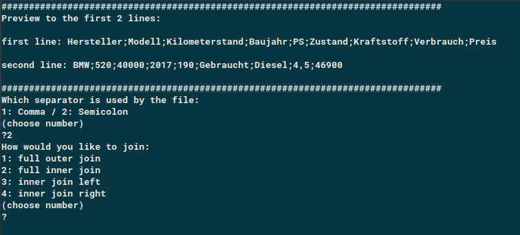 - filter table
- Analyse Fuctions
- Pre-Analyse
- Preview
- show first dataset

- show always 5 dataset till end
- show datatype
- show missing datas
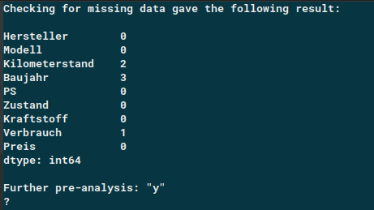 - show table into the browwser
- apend csv-files anhängen
- merge csv-fles
- set filter
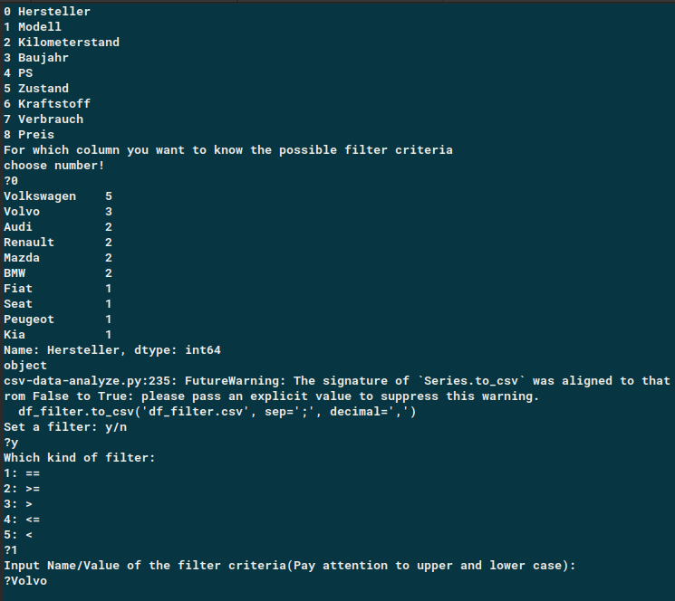
- Statistical Anaysis
- Descriptive Statistic

- Descriptive Statisttic hole table
- Descriptive Statistic numerical datas
- Descriptive Statitics choosed Column


- Graphical Analysis

- Bar-Chart
- Count Items of the column
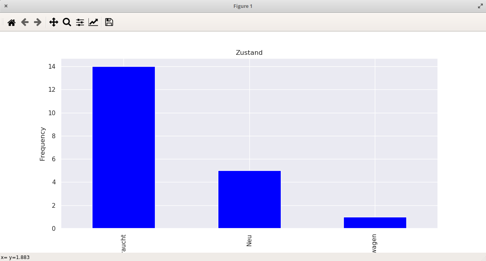 - Count with Category
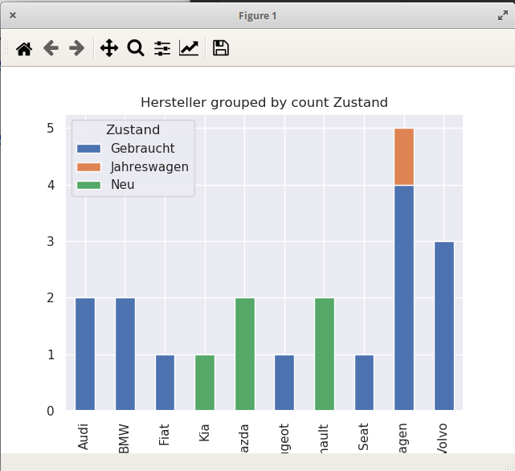
- Pie-Chart
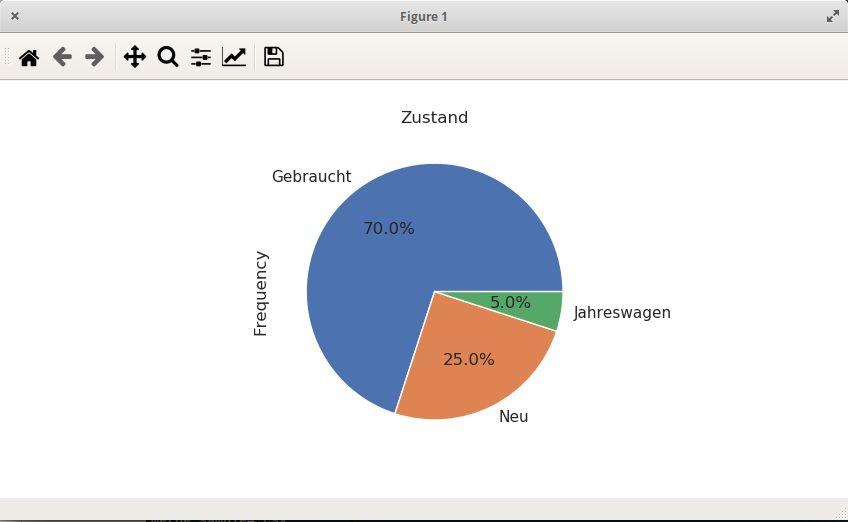 - Histogram
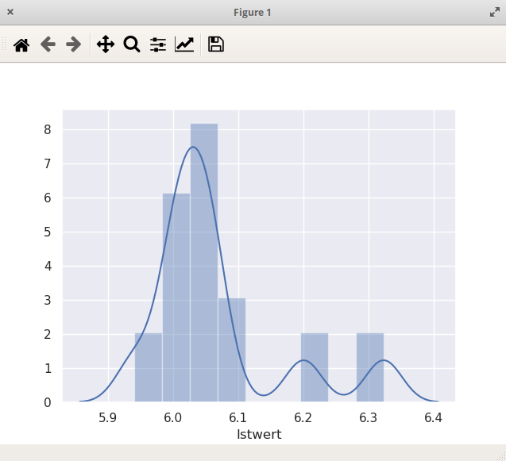 - Q-Q-Plot
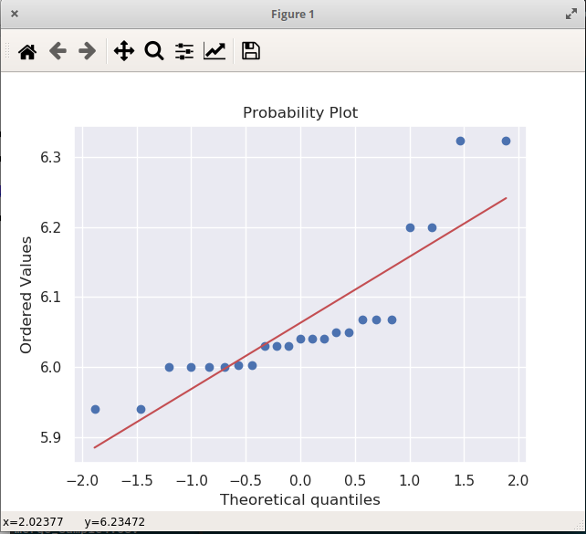 - Linechart

- Group Plot

- ScatterPlot
- scatter plot only (no regresssionline)
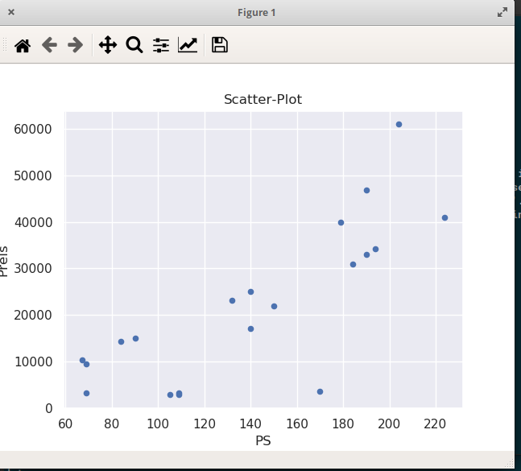 - regression plot (with regression line)

- regression joint plot (with regressionline and histogram)

- Categorial Plots

- Single Boxplot

- Boxplot by group

- Single Violin Plot

- Violinplot by Group

- Swarm-Plot
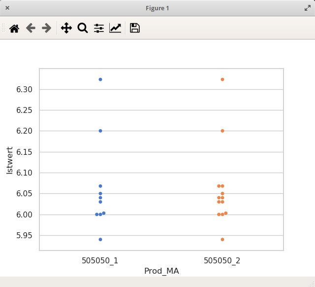
- MR-Chart
- Statistical Tests
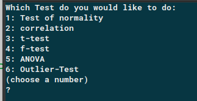- Test for normal distribution / choose column

- Correlation test between all numerical columns

- t-Test

- f-Test

- ANOVA
- Outlier Test
- Process Capability Study
- Linear regression analyse


needed packages:- Pandas
https://pandas.pydata.org/ - Matplotlib
https://matplotlib.org/ - scipy
https://www.scipy.org/ - numpy
https://numpy.org/ - seaborn
https://seaborn.pydata.org/ - outlier_utils
https://pypi.org/project/outlier_utils/ - statsmodels
https://www.statsmodels.org/stable/index.html
Lizensknown issues
-
Howto:
-download 'csv-data-analyze-master.zip'
-unzip
-go by cmd (Winodws) or shell(Linux) into the folder where the unpacked files are
-run: python3 csv-data-analyze.py